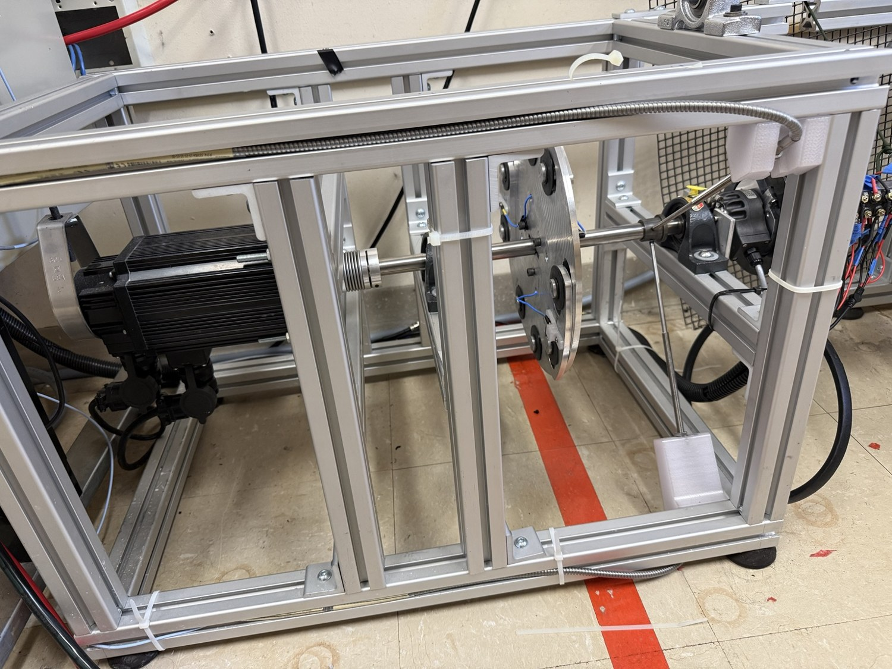
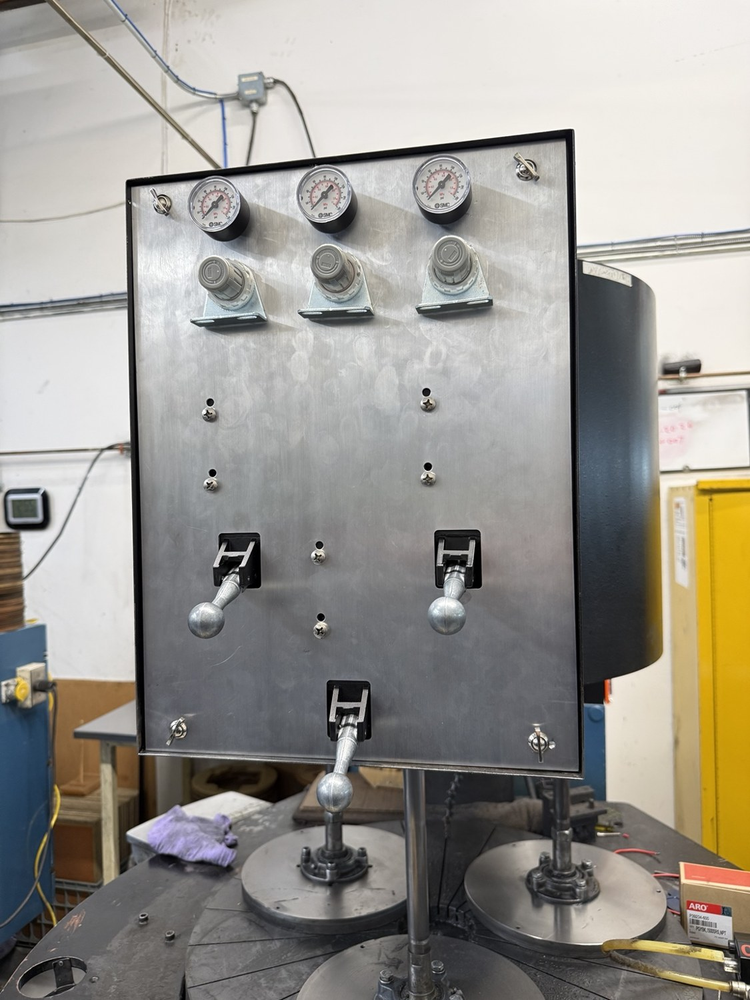
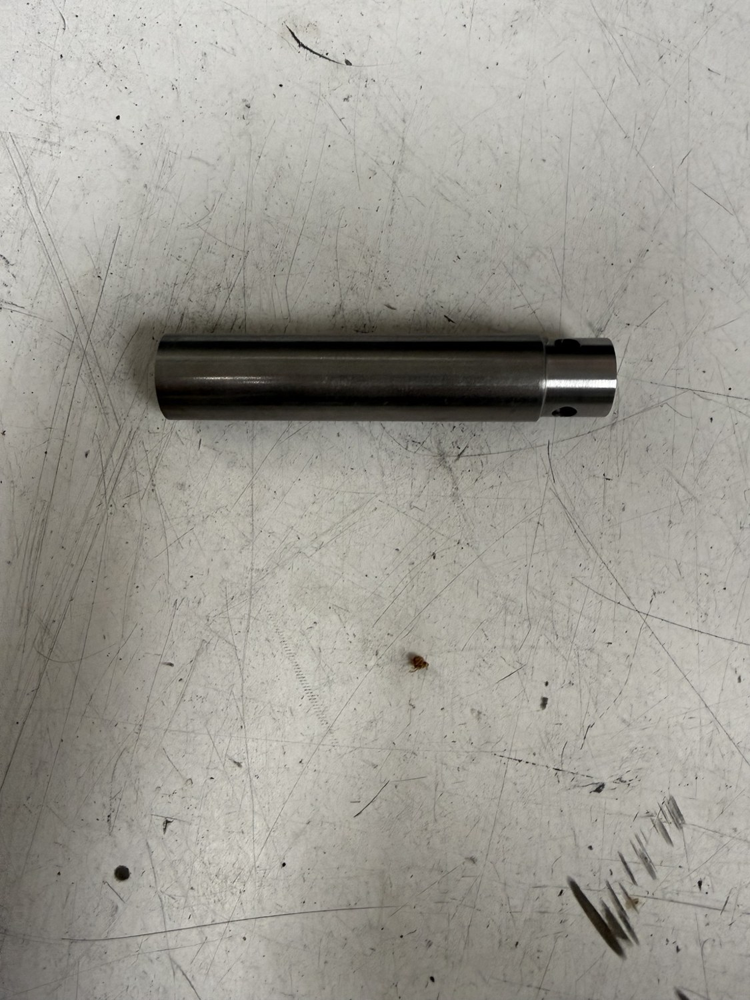
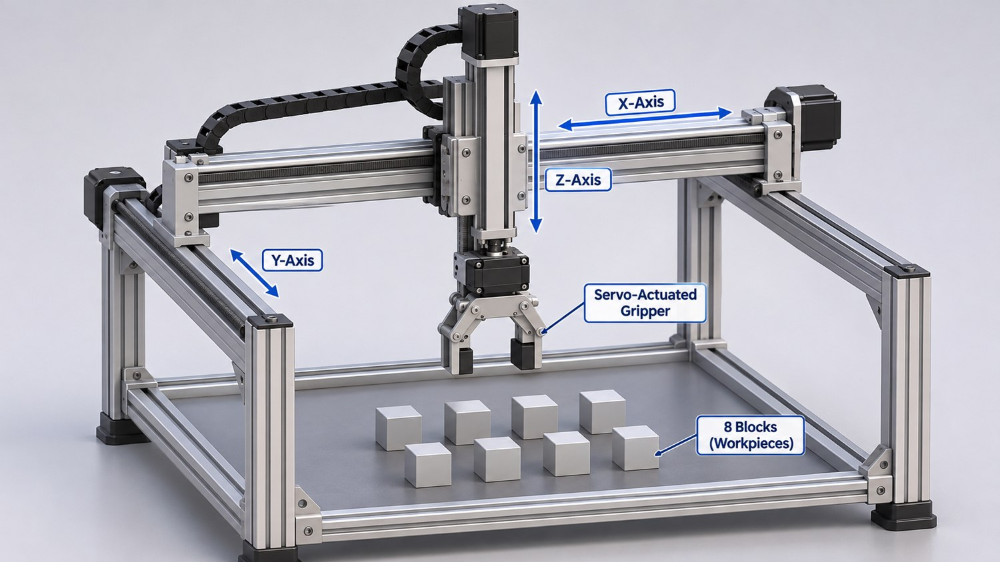

Guilherme Lima · Mechanical Engineer
Mechanical engineering.
From design to implementation.
Mechanical engineer and UMass Lowell master’s candidate. Selected work in mechanical design, industrial automation, manufacturing process development and experimental vibration research.
Projects

Automation · Design
Industrial Cleaning Line Automation
Awaiting approval

Research · Design
Centrifugal Pendulum Vibration Absorber
Research in progress

Manufacturing · Design
Legacy Machine Control System Retrofit
Implemented

Design · Manufacturing
Legacy Pneumatic Cylinder Retrofit Adapter
Implemented

Manufacturing · Design
Precision Lapping Table Segments
Implemented
Project overview
Manufacturing · Research
Automated Lapping and Polishing Development
In progress

Design · Personal
BMW F-Series Coilover Conversion
Final design

Academic · Design
Portable Off-Grid Water Heater
Senior capstone · 2025
Project overview
Academic · Design
Miniature 3D-Printed Inline-Four Engine
Academic project

Academic · Automation
3-Axis Gantry Robotic Gripper
Academic project